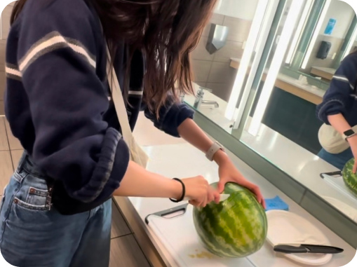
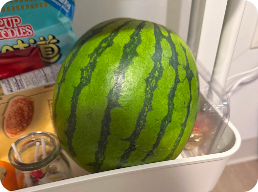
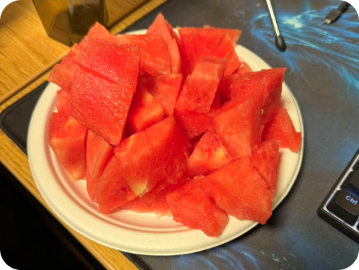
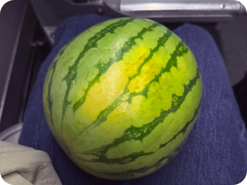
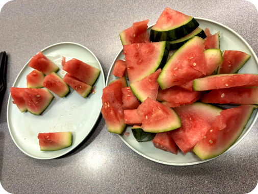

Over the last two semesters, I’ve probably cut over 20 watermelons, in places like the Blackwell bathroom, Unit 3 bathroom, my room, lounges, etc. I just love watermelon so much and wish for a future with many more watermelon cutting sessions :)




